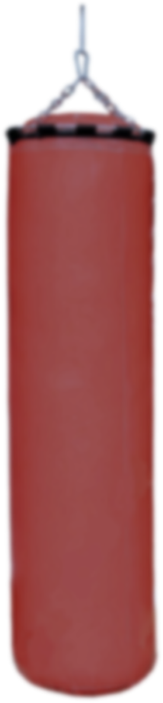
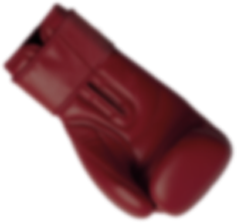
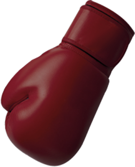

Бокс
Boxing training
Бокс
Почему из множества видов единоборств я выбрал именно бокс?
Бокс это настоящее искусство. Высокоинтеллектуальный вид спорта. Свои истоки берет до нашей эры, со времен кулачных боев. Постепенно претерпевая метаморфозы и дошедшая до нас в виде современного бокса, идеология этого вида спорта осталась неизменной
– величие ударной техники рук и защит. За счет своей «простоты», достигается четкость и отточенность действий, предел физических возможностей, раскрывается скрытый личностный потенциал. Результатом станет возможность выработать свой индивидуальный
стиль ведения боя. Акцент – общий «рисунок» боя! Координация, баланс, биомеханика, постановка и перемещение ног, а так же развитие боевого мышления в «диалоге» с соперником! Ментальное ощущение себя и противника в пространстве ринга. Помимо
постановки базовой техники ударов и защит, изучение более технически-сложных комбинированных атак, защит и контратак.